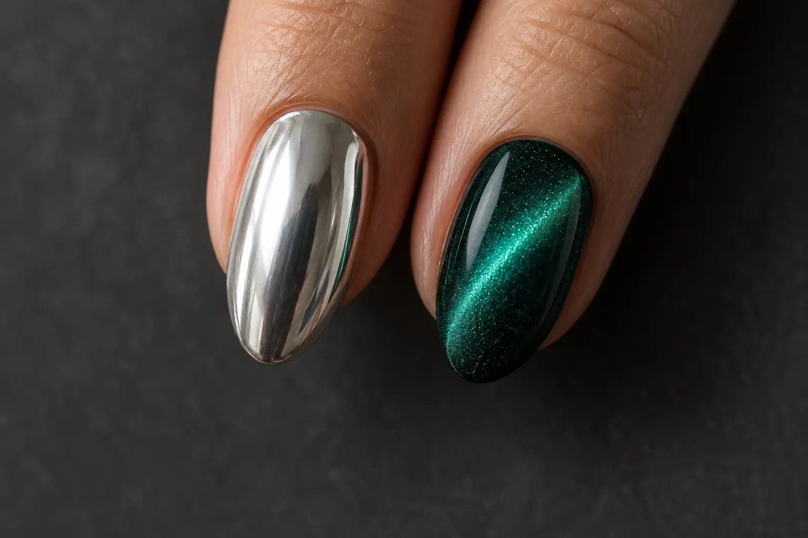

Chrome ir cat-eye nagai: du skirtingi šviesos efektai
Autorius: Madbeauty redakcija · Numatyta 2026 m. gruodžio 15 d. 16:00 (Lietuvos laiku)
Chrome sukuria vientiso metalo atspindžio įspūdį, o cat-eye – ryškią magnetinio efekto juostą. Sužinok, kuo skiriasi jų vaizdas ir kaip jį palyginti.

Chrome ir cat-eye nagai išsiskiria tuo, kaip atspindi šviesą. Chrome efektu siekiama vientiso metalinio paviršiaus, o cat-eye efektą atpažinsite iš ryškios šviesos juostos ar lanko spalvotame fone. Tai du skirtingi vizualiniai tikslai, bet konkrečiame dizaine juos galima derinti.
Atspindintis paviršius
Chrome dizaine žvilgsnį traukia metalinis blizgesys per pasirinktą nago plotą. „Veidrodinis“ čia apibūdina išvaizdą, o ne garantuoja tikslų veidrodžio atspindį: galutinis vaizdas priklauso nuo naudojamų priemonių ir jų derinio.
Vienos gamintojo gelio sistemos pavyzdyje chromo efektui pigmentas įtrinamas į paviršių ir padengimas užfiksuojamas. Tai tik konkrečios sistemos pavyzdys, ne universalus visų produktų naudojimo būdas.
Magnetinės linijos efektas
Cat-eye dizaine matoma šviesi juosta ar lankas, išsiskiriantis iš pagrindo spalvos. Apšvietimą ar žiūrėjimo kampą pakeitus, juostos ryškumas ir padėtis gali atrodyti kitokia. Konkrečioje gamintojo gelio sistemoje magnetinis įrankis pakeičia magnetinių dalelių išsidėstymą; skirtingų produktų sistemos gali veikti nevienodai.
Kaip palyginti vaizdą judant
Rinkdamiesi pirmiausia įvardykite, kokio akcento norite: plataus metalinio atspindžio ar labiau sutelktos šviesos juostos. Jei patinka abu, pasitikrinkite, ar pasirinktame dizaine numatyta juos derinti ir kokia nago dalis bus padengta kiekvienu efektu.
- Chrome: stebėkite, kokią nago dalį dengia metalinis atspindys ir ar jis yra pagrindinis vaizdo akcentas.
- Cat-eye: stebėkite juostos ar lanko formą ir kaip jos ryškumas kinta pakreipus nagą.
- Nuotraukas lyginkite esant panašiam apšvietimui. Šviesos spalva ir kameros baltos spalvos balansas gali pakeisti nuotraukoje matomą atspalvį, todėl vaizdas ekrane nebūtinai tiksliai atkartos realybę.
Trumpai: rinkitės chrome, jei norite platesnio metalinio paviršiaus įspūdžio, o cat-eye – jei norite išryškintos šviesos linijos. Pavadinimai nusako norimą efektą; tikslus rezultatas priklauso nuo konkrečios priemonių sistemos, dizaino ir apšvietimo.
Procedūrų aprašai kataloge: Dizainas. Miestą ir realaus teikėjo pasiūlymą pasirinkite kataloge, kai tokia pasiūla pateikta.
Susiję gidai
Šaltiniai
- Vili Nails · realių paslaugų variantai · www.treatwell.lt
- Treatwell · prancūziško manikiūro straipsnis · www.treatwell.lt
- Adobe · apšvietimas ir baltos spalvos balansas · www.adobe.com
- The GelBottle: cat-eye ir chrome gamintojo sistemos · assets.thegelbottle.com